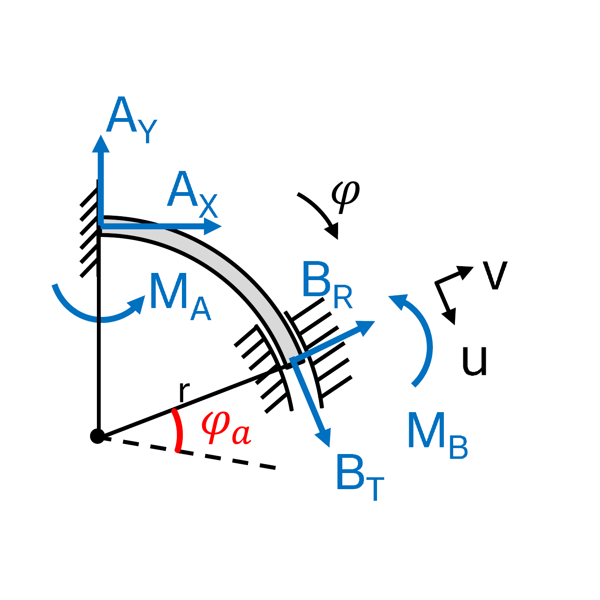
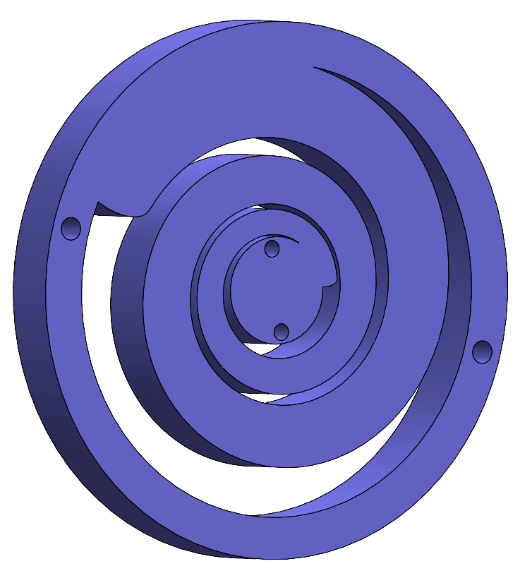
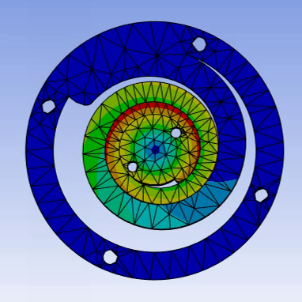

Multiarticular VSA Arm
What becomes possible when elasticity spans more than one joint?
A spring across two joints does what two separate springs cannot
In human anatomy many muscles span two or more joints at once: the biceps, the hamstrings, the gastrocnemius. These biarticular muscles are not a redundancy. They move energy from one joint to another, they spread a disturbance across the limb instead of letting one joint absorb it, and they shape the mechanical impedance the limb presents to whatever it touches.
Most variable stiffness research stops at the single joint. There, stiffness is whatever the internal geometry of the mechanism allows, and every new application needs a new mechanism. A coupling that spans two joints changes the terms: it produces off-diagonal entries in the joint stiffness matrix, and those entries are what the end-effector needs in order to be compliant in one direction and stiff in another.
Monoarticular only
Every joint carries its own actuation. Stiffness at the end-effector is whatever the individual joints allow, and the joint stiffness matrix stays diagonal. Any coupling between joints has to be produced by the controller.
With biarticular couplings
Across a million Cartesian stiffness combinations tested on a two-joint arm, the monoarticular version reached 0.2 per cent of them and the biarticular version 14.5 per cent: a 70-fold gain in versatility, measured as the range of achievable ellipse shapes and orientations.
Figures from Höppner, Wiedmeyer and van der Smagt, ICRA 2014. That work was carried out at the German Aerospace Center (DLR), before the SIRo Lab existed.

Setting the stiffness ellipse
How stiffly an arm resists a push at its end-effector depends on the direction of the push, and that directional stiffness can be drawn as an ellipse. Each principal axis of the ellipse is as long as the stiffness along it, so a long axis means a direction the arm holds firmly. Its inverse, the compliance ellipse, describes the same thing the other way round, as the deflection produced by a given force; the two are easy to confuse and mean opposite things. Three properties of the stiffness ellipse can be set, and each one is worth something different.
A long, narrow ellipse is stiff along its long axis and gives way across it. A circular one resists every direction alike.
How firmly the arm resists overall, independently of which direction it is stiffest in.
Where the stiff axis points, and therefore where the compliant one does. This is what turns a general property into a task-specific one.
What we expect that to buy
The following are the properties we are after, worked out from the mechanics and from the 2014 results. They describe what the platform is being built to do, not experiments it has already passed.
A key into a lock. Held by a stiff arm, a key either goes in or it jams. If the arm is compliant across the keyway and stiff along the direction of insertion, contact with the lock face can pull the key into alignment by itself, without a controller noticing that something was slightly off. Which directions have to be compliant, and which contacts do the aligning, is part of what has to be worked out.
A hammer that does not slip. At the instant a hammer meets a nail, the contact either holds or skids sideways. Orienting the ellipse at the contact point so that the arm is stiffest across the nail axis should produce a kind of trajectory tunnel: the head free to travel along the nail, constrained against sliding off it.
Stability from the mechanics rather than the loop. The end-effector also has an inertia ellipse, which follows from the mass distribution of the arm. Aligning the stiffness ellipse with it can make the closed loop easier to control, because mechanics and controller are no longer pulling in different directions. How much that is worth depends on the configuration, and it is one of the things we want to measure.
Energy that moves between joints. A coupling that spans two joints can pass energy from one to the other during a movement, rather than dissipating it and spending motor power to put it back. For dynamic tasks such as throwing, catching or an explosive extension, that can be the difference between a motor that has to be large and one that does not.
What we do not know yet
This platform exists because of the questions it has not answered. All of them are about where the mechanical complexity is worth paying for.
- Which couplings, and where? A two-joint arm has one possible biarticular coupling. A limb with more joints has many, and most of them are not worth building.
- Where is variable stiffness actually needed? If a joint only has to change its rest position, a series-elastic actuator will do. Variable stiffness costs a second coordinated drive, and it should be spent only where stiffness itself has to change.
- Mechanism or controller? Elasticity can be built in or computed. Built-in elasticity reacts at the speed of physics and needs no control effort while it acts; computed elasticity can be changed in software. The boundary between the two is the interesting part.
- Does any of this survive three dimensions? The results above are planar. A spatial arm with redundant joints is a different problem, and we do not yet know how much carries over.
These are the questions the arm is built to answer, which is also why it is not mounted on TIAGo Pro. It is the part of the work that looks further ahead than the rest, towards limbs for an elastic humanoid system rather than towards a better gripper. The arm has been built and measured several times; none of those measurements has been fully evaluated yet.
Design Approach
BAVS joints for independent position and stiffness control at each joint
Elastic elements spanning adjacent joints using novel cam-disc and spring mechanisms
Custom torsional springs (3DNS) with progressive nonlinear force-displacement profiles from the RA-L 2025 paper
Builds on the biarticular joint mechanism Höppner introduced to extend stiffness ranges (ICRA 2014)



Where this comes from
The starting point is a biarticular joint mechanism that Prof. Höppner designed in 2014, which extends the achievable stiffness range of a variable-stiffness arm without pneumatic artificial muscles and without tendon coupling, using combinations of springs and cam discs instead. The 70-fold figure above comes from that work.
That mechanism was developed at the German Aerospace Center (DLR), not at the SIRo Lab. It is prior work we build on, not work we claim.
What is ours is what came after: the 3D-printed nonlinear torsional springs (3DNS) published in IEEE RA-L in 2025, which make the nonlinear elastic elements manufacturable in-house, and the attempt to take the principle beyond two joints. The arm you see on the test stand is where that attempt currently stands.
Related Publications
- H. Höppner, A. Kirner, J. Göttlich, L. Jakob, A. Dietrich, C. Ott, “Variable Stiffness Actuation via 3D-Printed Nonlinear Torsional Springs,” IEEE Robotics and Automation Letters (RA-L), vol. 10, no. 5, pp. 4324–4331, 2025.
- M. Harder, M. Keppler, X. Meng, C. Ott, H. Höppner, A. Dietrich, “Simultaneous Motion Tracking and Joint Stiffness Control of Bidirectional Antagonistic Variable-Stiffness Actuators,” IEEE RA-L, 2022.
- H. Höppner, W. Wiedmeyer, P. van der Smagt, “A New Biarticular Joint Mechanism to Extend Stiffness Ranges,” IEEE ICRA, pp. 3403–3410, 2014.
Collaborators
Designs the 3D-printed nonlinear torsional springs and the couplings that span two joints, and builds the arm prototype from them.
Principal investigator.
Content reviewed with the lab on 18 September 2026. Statements about what exists, what has been shown and what is planned refer to that date.